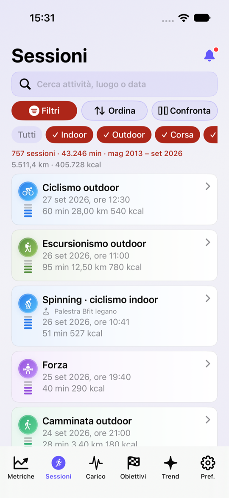
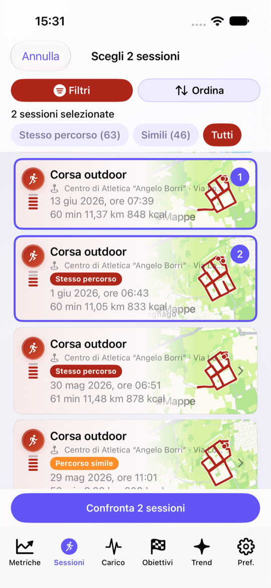
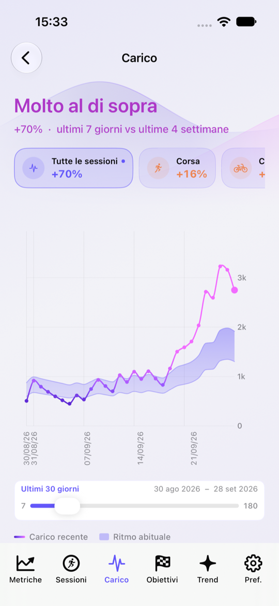
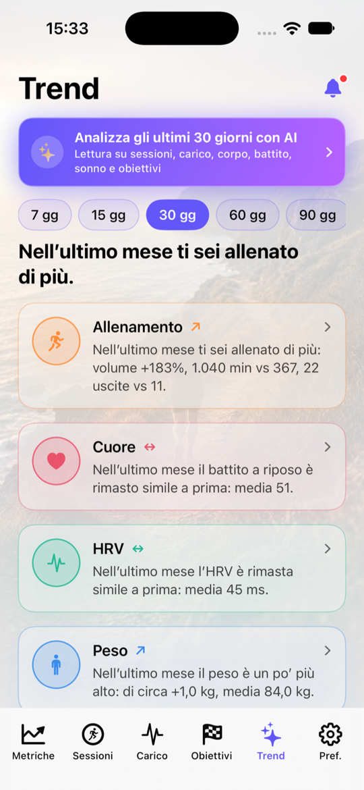
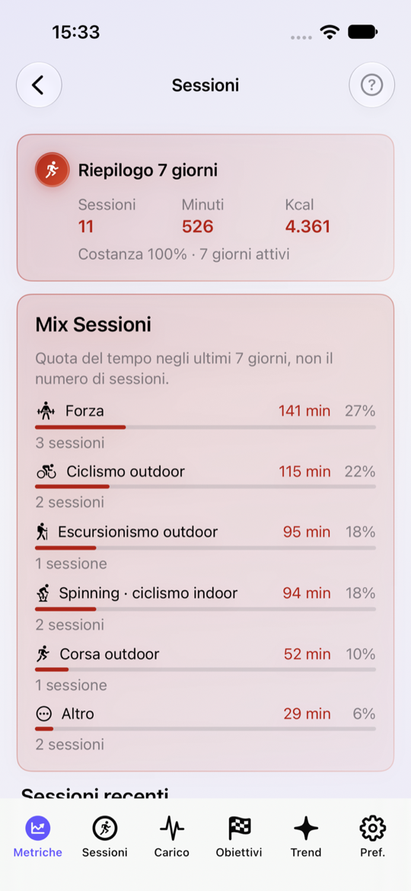

Analizza ogni allenamento
Durata, distanza, passo, velocità, calorie, dislivello, frequenza cardiaca, zone di intensità e mappa GPS: capisci come hai svolto ogni sessione.
iOS · Apple Salute · HealthKit
LifeNex
Trasforma i dati di Apple Salute in informazioni utili. Allenamenti, prestazioni, carico, recupero, composizione corporea e principali dati di salute — riuniti in un’unica app.
Non è solo un diario degli allenamenti. È lo strumento per osservare nel tempo come cambiano prestazioni, corpo e indicatori principali.
Durata, distanza, passo, velocità, calorie, dislivello, frequenza cardiaca, zone di intensità e mappa GPS: capisci come hai svolto ogni sessione.
Metti a confronto due allenamenti e verifica cosa è cambiato: durata, distanza, passo, FC, energia, dislivello e carico.
Grafici e serie temporali mostrano andamenti e cambiamenti che un singolo dato non rivela.
FC, FC a riposo, HRV, VO₂ max, pressione, ossigenazione, sonno, peso, BMI, massa grassa e magra, passi e attività — organizzati in un unico spazio.
Monitora durata, intensità, volume e carico nel tempo. Segui peso, massa grassa e magra sullo storico.
Imposta obiettivi e segui i progressi. L’analisi mette in relazione gli ultimi 30 giorni di allenamento, carico, corpo, cuore, movimento e recupero.
Riepilogo, Allenamenti, Carico, Obiettivi e Analisi: un’esperienza pensata per passare dal dato alla sua interpretazione.




